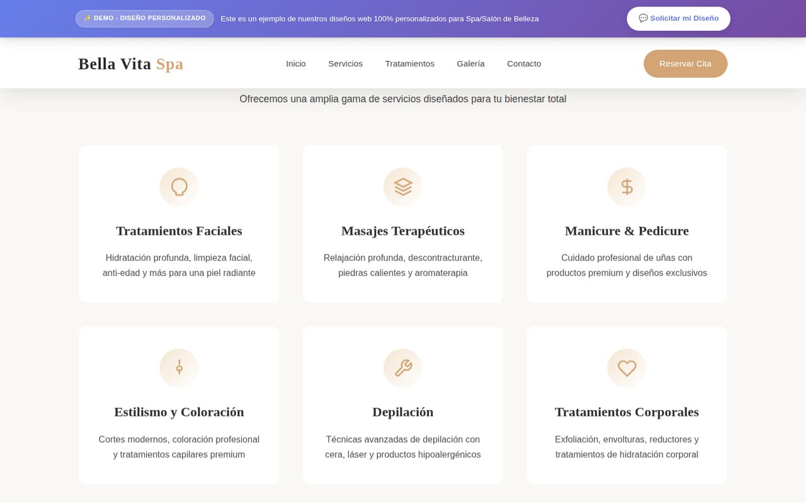
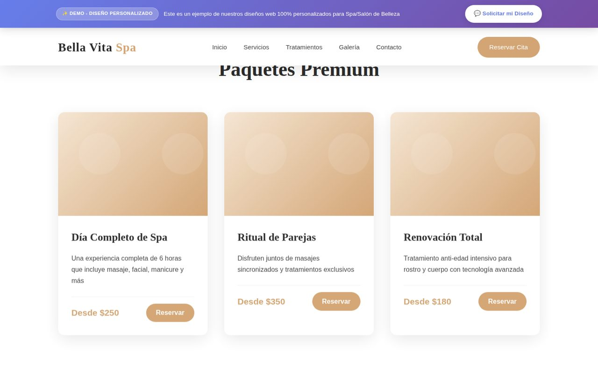
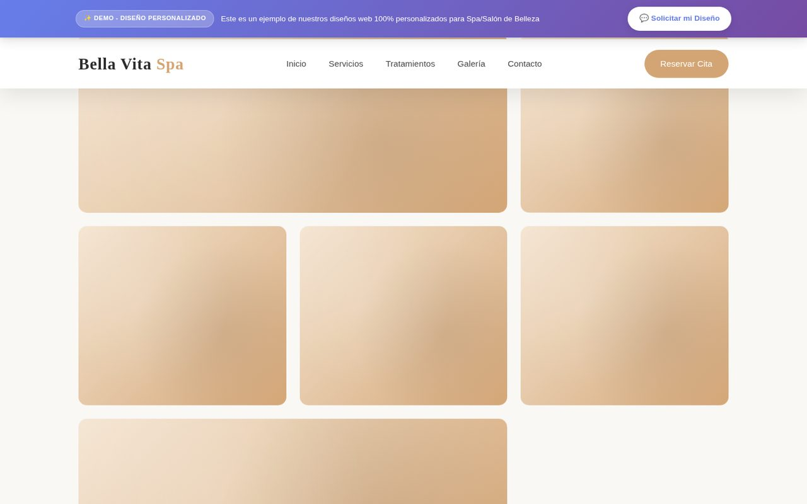
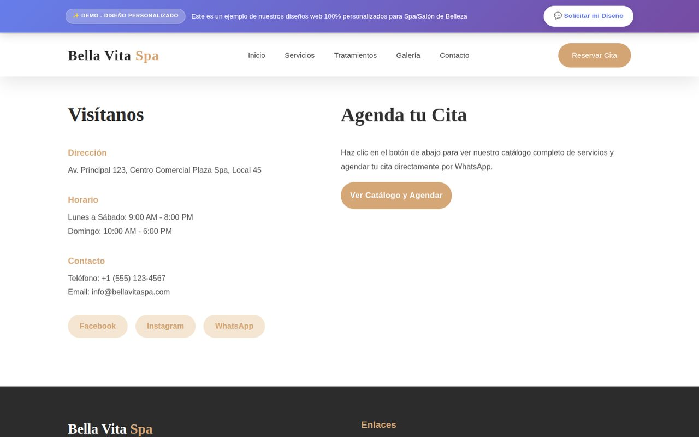
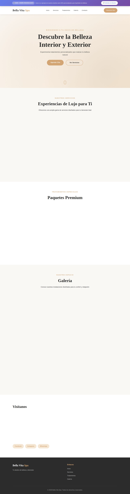
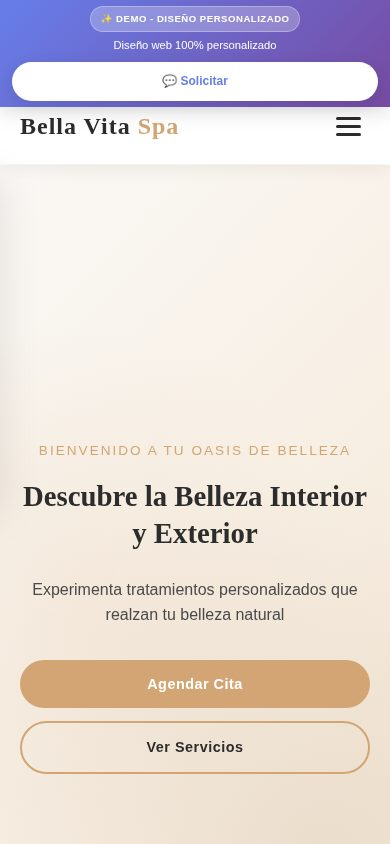
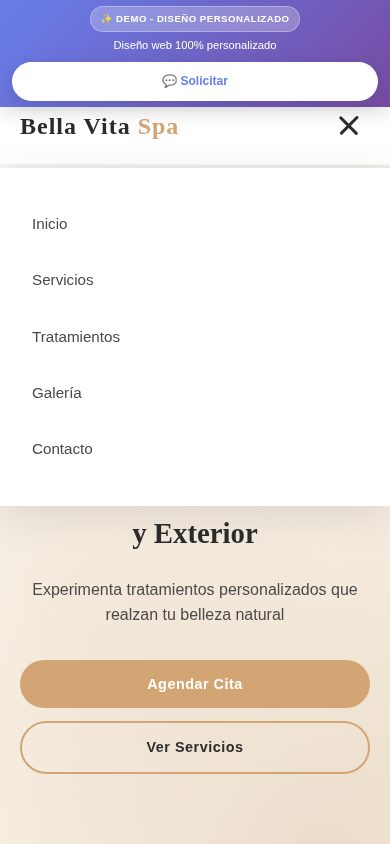

Bella Vita Spa
Landing page 100% personalizada para spa & salón de belleza
Caso de estudio de una demo comercial: diseño, arquitectura técnica, SEO y despliegue de un sitio estático que RugeDev usa como muestra de sus diseños web para negocios de belleza y spa.
Contexto y objetivo
Bella Vita Spa no es un negocio real: es una landing page de demostración que construí para RugeDev, pensada como pieza comercial para mostrarle a dueños de spas y salones de belleza cómo se ve un sitio web 100% a medida antes de contratarlo. El objetivo no era solo "verse bien", sino resolver un problema de negocio muy concreto: convertir visitas en citas agendadas por WhatsApp, con una experiencia rápida, cuidada y que transmita confianza desde el primer scroll.
Por eso cada decisión de diseño y de código se tomó pensando en el objetivo final: cero fricción entre "entrar al sitio" y "escribir por WhatsApp para agendar".
Diseño de experiencia (UX/UI)
- Paleta cálida y elegante: dorado (
#d4a574), marrón (#8b7355) y beige claro (#f5e6d3) sobre fondos claros, transmitiendo calma y lujo accesible — todo definido con variables CSS para poder re-tematizar el sitio en minutos para otro nicho. - Tipografía dual: Cormorant Garamond (serif) para títulos con carácter editorial y Montserrat (sans-serif) para texto de cuerpo, priorizando legibilidad.
- Jerarquía clara por secciones: Hero → Servicios → Tratamientos (paquetes con precio) → Galería → Contacto, replicando el recorrido natural de decisión de un cliente de spa.
- Micro-interacciones con propósito: efecto parallax sutil en el hero, fade-in
progresivo de tarjetas al hacer scroll (
IntersectionObserver) y navbar que cambia de estilo al hacer scroll, sin sacrificar rendimiento. - Mobile-first real: menú hamburguesa animado, tap targets de al menos 44px y validación manual en anchos de 320px a 430px para evitar overflow horizontal, un problema frecuente en landing pages con muchas secciones.
Arquitectura técnica
Es intencionalmente un sitio estático sin build step ni framework: HTML, CSS y JavaScript vanilla servidos directamente. Para una demo comercial que se comparte por WhatsApp o se despliega para múltiples prospectos, esto significa cero dependencias que puedan romperse, tiempos de carga mínimos y un despliegue trivial en cualquier hosting estático.
- Sin build:
index.html,styles.cssyscript.jsse sirven tal cual; el contenido se edita directamente en el HTML al no existir un CMS. - Interactividad vanilla: menú móvil, scroll suave a secciones, efecto navbar-on-scroll, parallax del hero y animaciones de entrada, todo con JavaScript nativo sin librerías externas.
- CI/CD automático: un workflow de GitHub Actions
(
azure-static-web-apps-*.yml) construye y despliega el sitio en Azure Static Web Apps con cada push amaster, y genera entornos de vista previa por cada pull request. - Configuración de hosting:
staticwebapp.config.jsoncontrola el enrutamiento y los headers del sitio en Azure. - Portable: al no depender de Azure específicamente, el mismo código se puede desplegar sin cambios en Netlify, Vercel o GitHub Pages.
SEO, analítica y performance
- Datos estructurados: JSON-LD
schema.org/BeautySaloncon dirección, horario y redes, para que buscadores puedan entender el "negocio" como una ficha local enriquecida. - Meta tags completos: Open Graph y Twitter Cards para que el enlace se vea
profesional al compartirse por WhatsApp o redes sociales, además de
canonical,robots.txtysitemap.xml. - Analítica: integración con Google Analytics (
gtag.js) para medir tráfico y validar la demo con datos reales de uso. - Favicons multi-dispositivo: SVG, PNG 32×32 y apple-touch-icon para una identidad consistente en pestañas, marcadores y pantallas de inicio en iOS.
Validación responsive y QA
Antes de dar por cerrada la demo, la validé en dispositivos móviles reales entre 320px y 430px de ancho, revisando tres cosas puntuales que suelen fallar en landings con navbar fijo: que no apareciera scroll horizontal en ninguna sección, que los botones y enlaces tuvieran un área táctil de al menos 44×44px, y que el scroll a cada sección no quedara tapado por el header fijo (banner de demo + navbar), ajustando el offset de scroll dinámicamente según la altura real del header en cada breakpoint.
Capturas de pantalla
Recorrido visual por el sitio en escritorio y móvil.






Vista móvil (390px)


Mi rol y aprendizajes
Diseñé y construí el sitio completo (diseño visual, maquetado, interactividad, SEO técnico y pipeline de despliegue) usando Claude Code como acelerador de desarrollo, lo que me permitió pasar de idea a demo desplegada y validada en dispositivos reales en muy poco tiempo, sin sacrificar buenas prácticas de accesibilidad, SEO ni responsive design.
El mayor aprendizaje reutilizable de este proyecto es que una demo comercial bien construida — rápida, sin dependencias frágiles y con SEO real desde el día uno — puede desplegarse en minutos en cualquier hosting estático y adaptarse a un nuevo nicho simplemente cambiando variables CSS y contenido, sin tocar la arquitectura.
¿Quieres algo similar para tu negocio o tu equipo? Escríbeme →